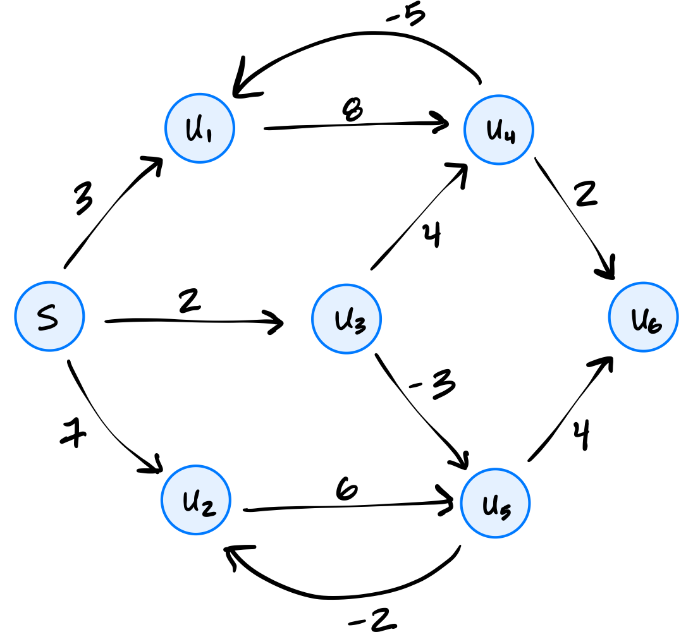
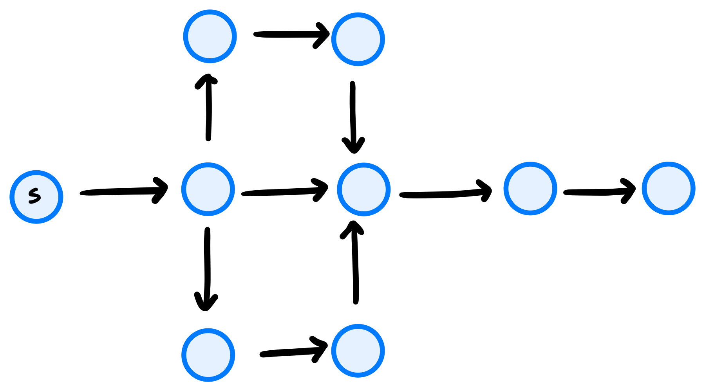
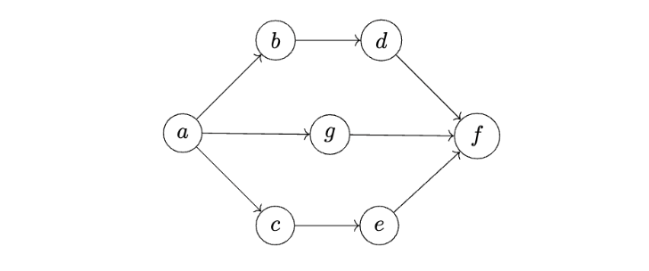
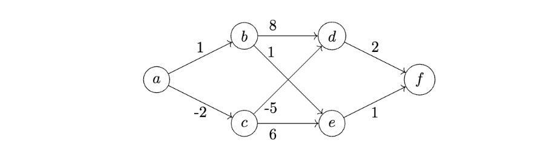
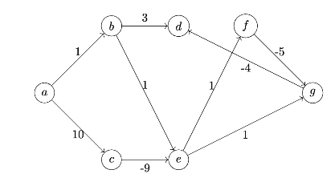

Problems tagged with "bellman-ford"
Problem #117
Tags: bellman-ford
Recall that the outer loop of the Bellman-Ford algorithm without early stopping loops for a fixed number of iterations, while the inner loop iterates over each edge of the graph.
Suppose Bellman-Ford with early stopping is run on the graph below using node \(s\) as the source:

What is the fewest number of iterations of the outer loop that can possibly be performed?
Solution
2
Problem #118
Tags: bellman-ford
Recall that the Bellman-Ford algorithm keeps track of the estimated shortest path distance from the source to each node in the graph. These estimates are updated, and eventually become correct, provided that the graph has no negative cycles.
Suppose the Bellman-Ford algorithm is run on the graph below using node \(s\) as the source.

After 2 iterations of the outer loop, which of the nodes listed below are guaranteed to have correct estimated shortest path distances (no matter the order in which graph.nodes produces the graph's nodes)? Select all that apply.
Solution
\(u_3\), \(u_4\), and \(u_5\) are guaranteed to have correct estimated shortest path distances after 2 iterations of the outer loop. \(s\) is guaranteed to have a correct estimated shortest path distance after 1 iteration of the outer loop.
Problem #119
Tags: bellman-ford
Suppose the Bellman-Ford algorithm is run on a graph \(G\) that does not contain negative cycles. Let \(u\) be an arbitrary node in the graph, and assume that \(u\) is reachable from the source.
True or False: \(u\)'s estimated distance can change multiple times during the algorithm's execution.
Solution
True.
Problem #134
Tags: bellman-ford
Suppose the Bellman-Ford algorithm with early stopping is run on the weighted graph shown below using node \(s\) as the source (the edge weights are intentionally not shown). In the worst case, how many iterations of Bellman-Ford will be performed? That is, how many iterations of the outer for-loop will occur?

Solution
7
Problem #135
Tags: bellman-ford
Again consider a ``2-chain'' graph, which was defined above to the a graph with \(n\) nodes that is constructed by taking \(n\) nodes labeled 1, 2, \(\ldots\), \(n\), and, for each node \(u\), making an edge to nodes \(u + 1\) and \(u + 2\)(if they are in the graph).
Suppose the Bellman-Ford algorithm without early stopping is run on a 2-chain graph with \(n\) nodes, using node 1 as the source. What is the time taken as a function of \(n\)? State your answer using asymptotic notation.
Solution
\(\Theta(n^2)\)
Problem #163
Tags: bellman-ford
Recall that Bellman-Ford with early stopping updates edges iteratively until no estimated distances change, at which point the algorithm terminates early. True or False: the number of iterations needed before early termination may depend on the order in which the edges are updated.
Solution
True
Problem #227
Tags: bellman-ford
Suppose Bellman-Ford with early stopping is run on the weighted graph below whose edge weights are unknown to us (but known to the algorithm). The algorithm uses node \(a\) as the source node.

How many iterations of the outer loop will be run in the worst case? Your answer should be a number.
Problem #232
Tags: bellman-ford
Suppose the Bellman-Ford algorithm is run on the following graph using node \(a\) as the source node:

Suppose when graph.edges is called, the edges are returned in the order:
\((a, b), (c, e), (d, f), (c, d), (b, d), (b, e), (a, c), (e, f) \).
After one iteration of the outer loop of Bellman-Ford, what is the estimated distance to node \(d\)?
Problem #243
Tags: bellman-ford
Suppose Bellman-Ford with early stopping is run on the weighted graph below. The algorithm uses node \(a\) as the source node.

After the third iteration, name all nodes whose shortest path from \(a\) are guaranteed to be estimated correctly.
Solution
1st option: \(\{a,b,c,e,f\}\)